Surse de date și indicatori
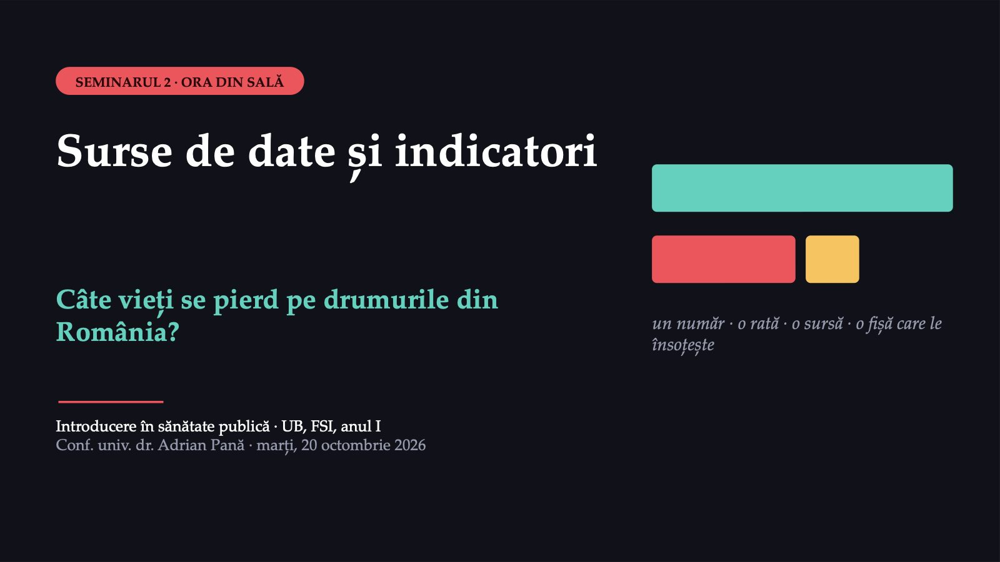
1 / 27Bine ați venit la al doilea seminar. Întrebarea de azi este în titlu: câte vieți se pierd pe drumurile din România. Veți vedea de ce aceeași realitate poate fi descrisă prin cifre care par să se contrazică, unde se găsesc datele oficiale și cum se citește fișa care le însoțește.
Ce faceți azi și ce am schimbat la seminar
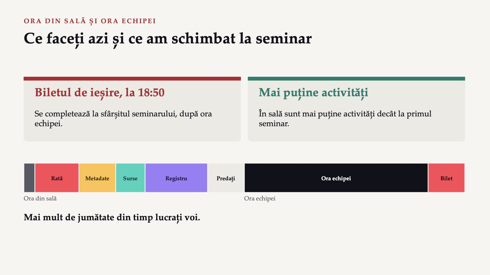
2 / 27Seminarul are două ore: o oră în sală, cu grupele 101 și 102 împreună, și o oră de lucru a echipei, în sală sau pe Teams. Față de primul seminar sunt două schimbări: biletul de ieșire se completează la 18:50, la sfârșitul seminarului, și sunt mai puține activități în sală. Mai mult de jumătate din timp lucrați voi: votați, discutați cu colegul de bancă, vă împărțiți în două tabere și scrieți, în echipă, primul rând din registrul surselor.
Șase momente în sală, apoi ora echipei
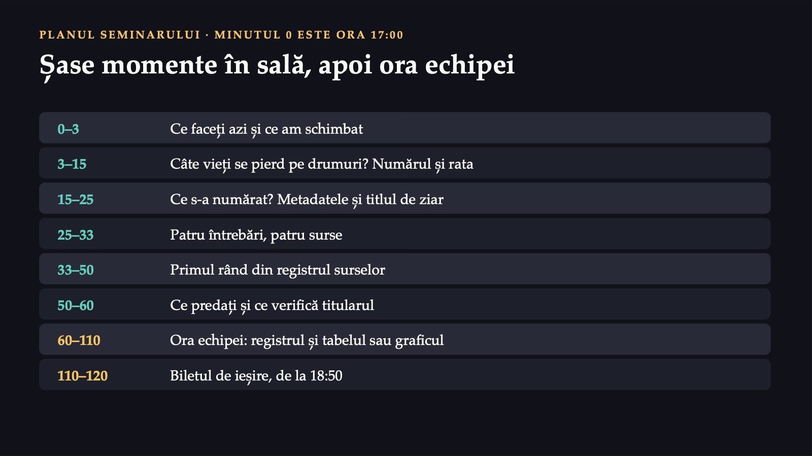
3 / 27Planul orei din sală și al orei echipei. În sală sunt două voturi pe telefon, un moment de lucru în perechi și în două tabere și primul rând din registrul surselor, scris în echipă. Ora echipei începe la 18:00, iar biletul de ieșire închide seminarul la 18:50.
1 478
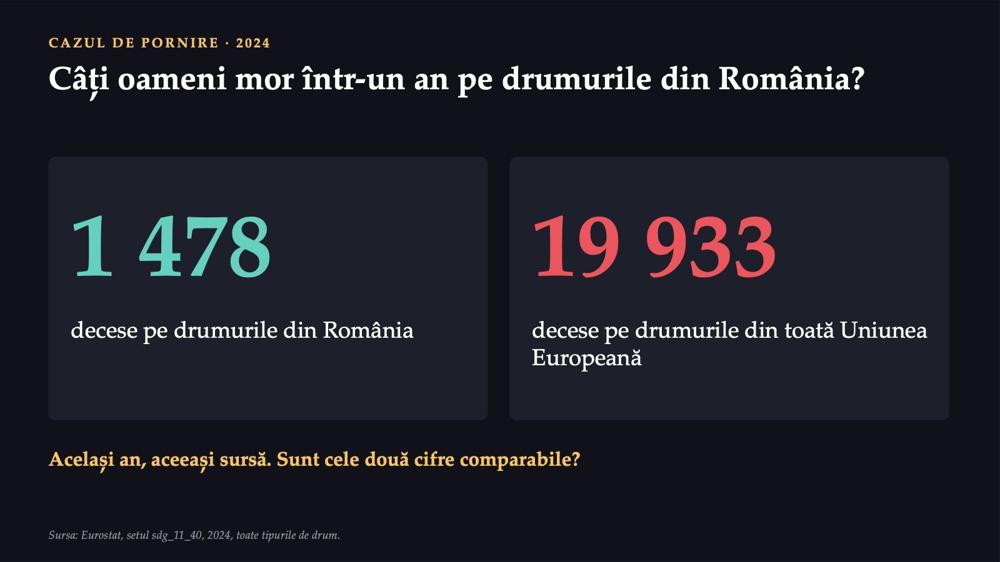
4 / 27Gândiți-vă la ultimul drum lung pe care l-ați făcut cu mașina sau cu autocarul, de acasă până la facultate. Câți oameni mor, într-un an, pe drumurile din România? Potrivit Eurostat, în 2024 au murit 1 478 de oameni. În același an, în toată Uniunea Europeană, au murit pe drumuri 19 933 de oameni.
Judecând numai după aceste două cifre, unde a fost mai mare, în 2024, riscul unei persoane de a muri pe drum?
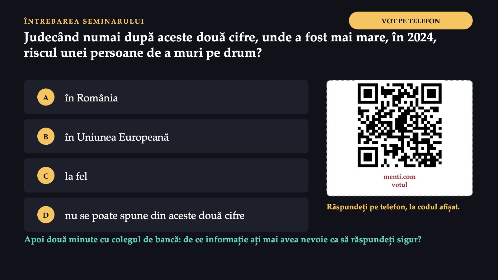
5 / 27Votați pe telefon, prin codul QR de pe ecran, o singură variantă la întrebarea: judecând numai după aceste două cifre, unde a fost mai mare, în 2024, riscul unei persoane de a muri pe drum? Variantele sunt: în România, în Uniunea Europeană, la fel și nu se poate spune din aceste două cifre. Apoi discutați două minute cu colegul de bancă: de ce informație ați mai avea nevoie ca să răspundeți sigur?
7,8
![AL PATRULEA RĂSPUNS · NU SE POATE SPUNE Numerele singure nu arată riscul Uniunea Europeană are mult mai mulți locuitori decât România, iar România este inclusă în cifra Uniunii. Pentru o comparație cinstită, numărul deceselor se raportează la populație. România 7,8 la 100 000 de locuitori Uniunea Europeană 4,4 la 100 000 de locuitori Riscul a fost de circa 1,8 ori mai mare în România. Fără populație, cele două numere nu arată unde a fost riscul mai mare. Sursa: Eurostat, setul sdg_11_40, 2024; ratele la 100 000 de locuitori.](diapozitive/LP02/006.jpg) 6 / 27
6 / 27Cele două cifre nu se pot compara așa cum sunt, pentru că Uniunea Europeană are mult mai mulți locuitori decât România, iar România este ea însăși inclusă în cifra Uniunii. Pentru o comparație cinstită, numărul deceselor se raportează la populație. Eurostat publică rata în același set de date: în 2024, 7,8 decese la 100 000 de locuitori în România și 4,4 în Uniunea Europeană. Riscul a fost, așadar, de circa 1,8 ori mai mare în România. Varianta a patra, nu se poate spune din aceste două cifre, este cea corectă: fără populație, cele două numere nu arată unde a fost riscul mai mare.
15
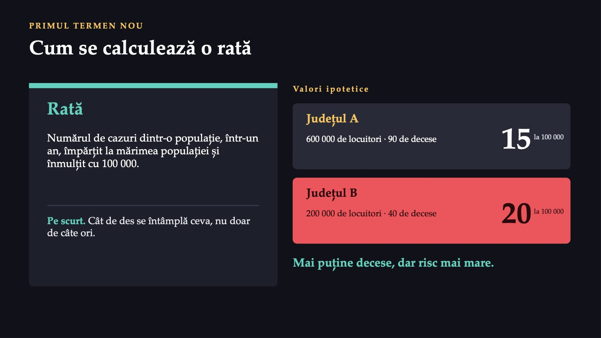
7 / 27Rata este numărul de cazuri apărute într-o populație într-un interval de timp, de regulă un an, împărțit la mărimea populației și înmulțit cu 100 000, ca să se citească ușor. În limbaj de zi cu zi: cât de des se întâmplă ceva, nu doar de câte ori. Un exemplu cu valori ipotetice: județul A are 600 000 de locuitori și 90 de decese pe drumuri într-un an, județul B are 200 000 de locuitori și 40 de decese. Județul A are mai multe decese, dar rata lui este de 15 la 100 000 de locuitori, față de 20 în județul B. Județul cu mai puține decese are riscul mai mare.
1 818
 8 / 27
8 / 27În toți cei trei ani, rata României a fost mai mare decât rata Uniunii, iar ambele au scăzut între 2019 și 2024. În 2014, în România au fost 1 818 decese, adică 9,1 la 100 000 de locuitori, față de 5,5 în Uniune. În 2019, 1 864 de decese și 9,6, față de 5,1. În 2024, 1 478 de decese și 7,8, față de 4,4. Eurostat marchează ca estimate ratele României din toți cei trei ani. Rata Uniunii este estimată, cea din 2024 este și provizorie, iar cea din 2014 marchează o ruptură de serie. Scăderea ratei Uniunii se citește cu prudență, pentru că Eurostat marchează valorile ei din anii 2020–2023 cu ruptură de serie. Nici tabelul, nici graficul nu spun de ce au scăzut ratele.
În 2024, rata României a fost cea mai mare din Uniune
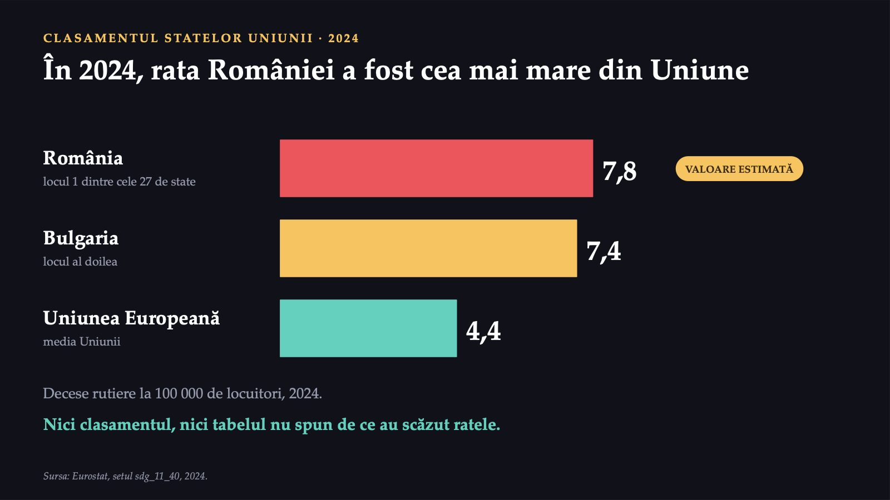
9 / 27În 2024, rata României, de 7,8 la 100 000 de locuitori, valoare estimată de Eurostat, a fost cea mai mare dintre cele 27 de state ale Uniunii. Pe locul al doilea a fost Bulgaria, cu 7,4. Pentru comparație, rata Uniunii a fost de 4,4. Nici clasamentul, nici tabelul de mai devreme nu spun de ce au scăzut ratele. Pentru asta trebuie căutate cauzele, ceea ce veți face în seminariile următoare, pentru problema echipei voastre.
Număr sau rată?
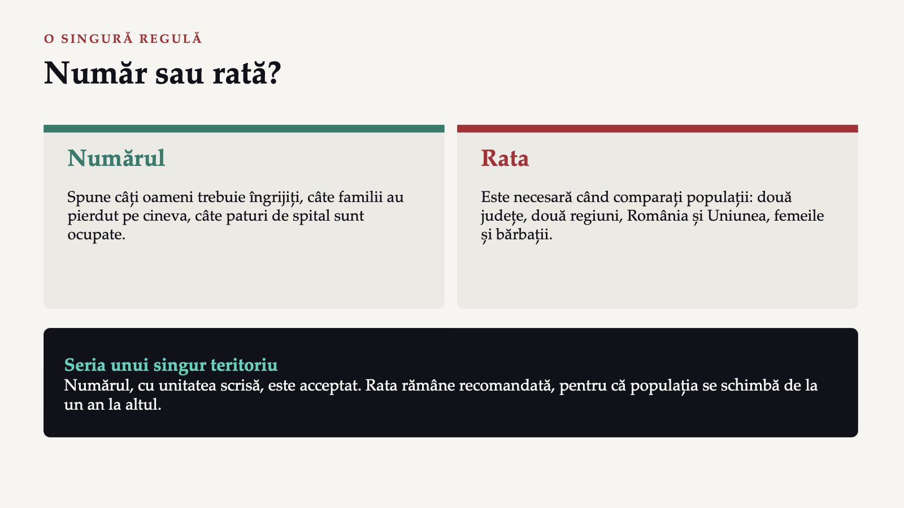
10 / 27Numărul are rostul lui: spune câți oameni trebuie îngrijiți, câte familii au pierdut pe cineva, câte paturi de spital sunt ocupate. Rata este necesară atunci când comparați populații: două județe, două regiuni, România și Uniunea sau două grupuri, de exemplu femeile și bărbații. Pentru seria de timp a unui singur teritoriu, numărul se poate folosi, cu unitatea scrisă, dar rata rămâne recomandată, pentru că populația se schimbă de la un an la altul. În perioada 2014–2024, cele mai multe decese pe drumurile României au fost în 2017, adică 1 951, iar în 2024 au fost 1 478.
Cine intră în cifra deceselor rutiere?
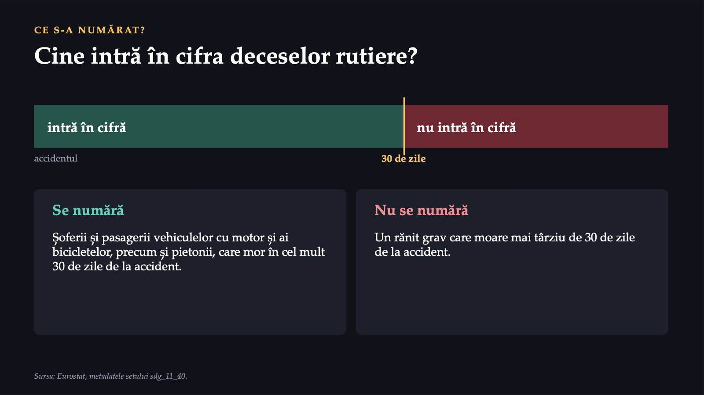
11 / 27O cifră corectă poate fi totuși înțeleasă greșit dacă nu știți ce s-a numărat. Pentru decesele rutiere, întrebarea pare simplă: cine moare într-un accident? Răspunsul depinde de o regulă. Eurostat numără șoferii și pasagerii vehiculelor cu motor și ai bicicletelor, precum și pietonii, care mor în cel mult 30 de zile de la accident. Un rănit grav care moare mai târziu de 30 de zile de la accident nu intră în această cifră.
Metadatele: eticheta de pe ambalaj
 12 / 27
12 / 27Regula se află în metadate, fișa care însoțește orice set de date oficial. Metadatele spun ce s-a numărat, cum, la cine, pentru ce perioadă și de unde provin datele; în limbaj de zi cu zi, sunt eticheta de pe ambalaj, cu ingredientele și cu data fabricației. În fișa Eurostat a deceselor rutiere aflați că cifra se publică și ca număr, și ca număr la 100 000 de persoane. Datele provin de la Direcția Generală Mobilitate și Transporturi a Comisiei Europene, DG MOVE, din CARE, baza de date europeană a accidentelor rutiere, care adună datele raportate de țări. Ele apar în cel mult doi ani după anul la care se referă. La data acestui seminar, cel mai recent an din acest set este 2024.
Literele mici și rupturile de serie
![LITERE MICI LÂNGĂ CIFRE Literele mici și rupturile de serie e valoare estimată p valoare provizorie b ruptură de serie Ruptura de serie înseamnă că metoda s-a schimbat: anii de dinainte și cei de după nu sunt pe deplin comparabili. Exemplu din datele românești: mortalitatea infantilă (INS, TEMPO-Online) 2012 2013 2014 după domiciliu din 2014, după reședința obișnuită La grafic: o linie verticală și o notă sub grafic. Sursa: Eurostat, setul sdg_11_40; Institutul Național de Statistică, TEMPO-Online.](diapozitive/LP02/013.jpg) 13 / 27
13 / 27Lângă unele cifre apar litere mici. În setul deceselor rutiere, Eurostat marchează cu e valorile estimate, cu p pe cele provizorii și cu b o ruptură de serie. Ruptura de serie înseamnă că metoda s-a schimbat, așa că anii de dinainte și cei de după nu sunt pe deplin comparabili. Rupturi de serie apar și în datele românești. În matricea Institutului Național de Statistică pentru mortalitatea infantilă, decesele și nașterile din 2012 și 2013 sunt repartizate după domiciliu, iar începând cu 2014, după reședința obișnuită. O echipă care pune toată seria într-un grafic trebuie să semnaleze schimbarea, de exemplu printr-o linie verticală și o notă sub grafic.
Ce nu putem afirma din aceste date
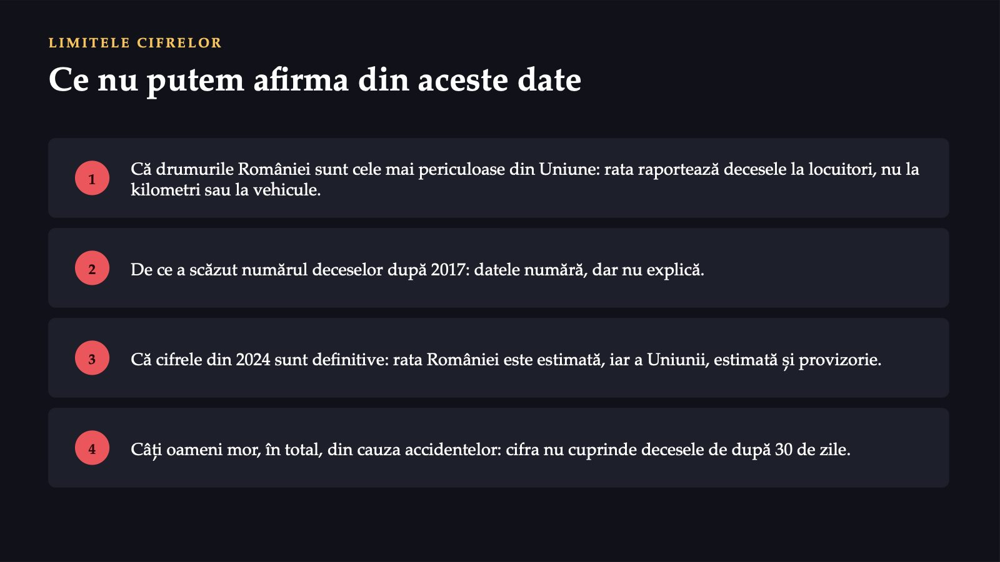
14 / 27Datele folosite în acest seminar nu ne permit să spunem, mai întâi, că drumurile din România sunt cele mai periculoase din Uniune: rata raportează decesele la locuitori, nu la kilometrii parcurși sau la numărul vehiculelor. Nu ne permit să spunem de ce a scăzut numărul deceselor după 2017: datele numără, dar nu explică. Nu ne permit să spunem că cifrele din 2024 sunt definitive: rata României este estimată, iar rata Uniunii este estimată și provizorie. Și nu ne permit să spunem câți oameni mor, în total, din cauza accidentelor rutiere, pentru că cifra Eurostat nu cuprinde decesele survenite după 30 de zile de la accident.
Drumurile din România, mult mai sigure decât cele din Uniunea Europeană: 1 478 de decese, față de 19 933
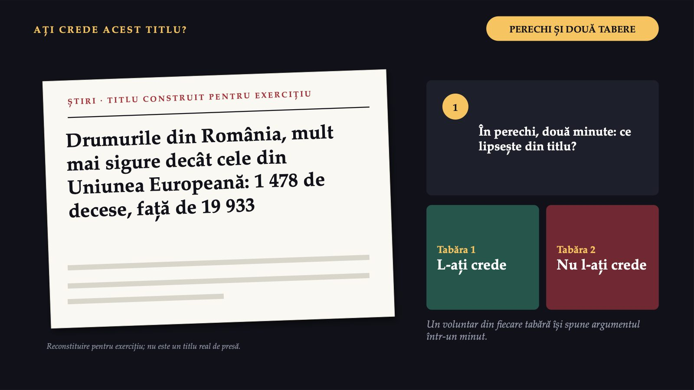
15 / 27Pe ecran este un titlu construit pentru exercițiu: „Drumurile din România, mult mai sigure decât cele din Uniunea Europeană: 1 478 de decese, față de 19 933”. Ați crede acest titlu? În perechi, timp de două minute, căutați ce lipsește din el. Apoi sala se împarte în două tabere, cei care l-ar crede și cei care nu l-ar crede, iar câte un voluntar din fiecare tabără își spune argumentul într-un minut.
Cifre corecte, concluzie falsă
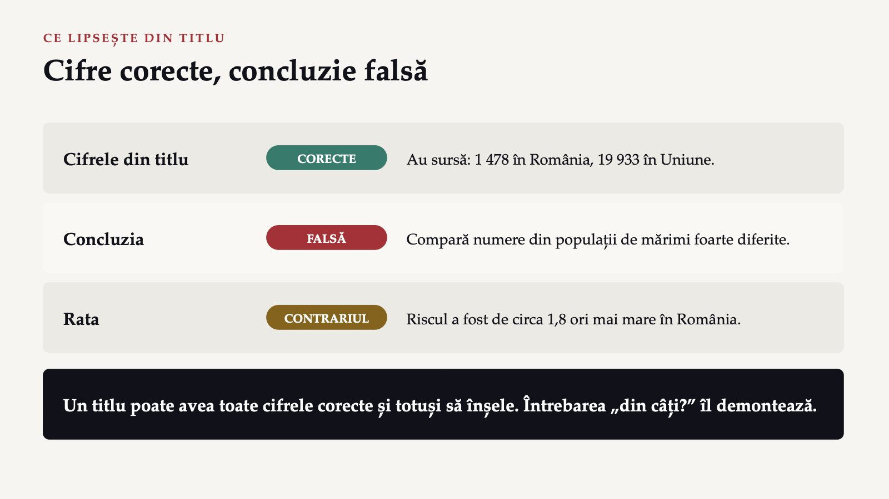
16 / 27Cifrele din titlu sunt corecte și au sursă. Concluzia este însă falsă, pentru că titlul compară numere din populații de mărimi foarte diferite, iar rata arată contrariul: riscul a fost de circa 1,8 ori mai mare în România. Unui titlu îi pot lipsi etichetele, ca în primul seminar, dar poate avea și toate cifrele corecte și totuși să înșele. Întrebarea „din câți?” îl demontează.
Patru surse, patru întrebări
![UNDE CĂUTAȚI CIFRELE Patru surse, patru întrebări Institutul Național de Statistică TEMPO-Online când vă interesează un județ sau o regiune http://statistici.insse.ro:8077/tempo-online/ Eurostat baza de date când comparați România cu Uniunea sau cu alte state membre https://ec.europa.eu/eurostat/data/database Institutul Național de Sănătate Publică supravegherea bolilor pentru bolile infecțioase, de exemplu rujeola și gripa, și pentru bolile cronice https://insp.gov.ro Organizația Mondială a Sănătății Global Health Observatory când comparați România cu țări din afara Uniunii https://www.who.int/data/gho](diapozitive/LP02/017.jpg) 17 / 27
17 / 27Cifra despre drumuri a venit de la Eurostat. Pentru alte întrebări, alte surse sunt mai potrivite. Majoritatea cifrelor de care aveți nevoie în proiect se găsesc la patru instituții. Matricele TEMPO-Online ale Institutului Național de Statistică dau multe date și pe regiuni de dezvoltare și pe județe. Eurostat publică date comparabile pentru statele Uniunii, unele și pe regiuni. Institutul Național de Sănătate Publică supraveghează starea de sănătate a populației și bolile transmisibile și netransmisibile. Observatorul Global al Sănătății al Organizației Mondiale a Sănătății prezintă date pe indicatori și pe țări.
La fiecare întrebare, votați sursa la care ați căuta întâi
![VOT PE TELEFON UNDE AȚI CĂUTA ÎNTÂI? La fiecare întrebare, votați sursa la care ați căuta întâi 1 Mortalitatea infantilă în județul vostru. 2 România față de media Uniunii: speranța de viață la naștere. 3 Cazurile de rujeolă raportate în România luna trecută. 4 România față de Japonia și Brazilia: speranța de viață. Răspundeți pe telefon, la codul afișat. Variantele de la fiecare întrebare: Institutul Național de Statistică, Eurostat, Institutul Național de Sănătate Publică, Organizația Mondială a Sănătății. menti.com votul](diapozitive/LP02/018.jpg) 18 / 27
18 / 27Patru întrebări apar pe rând pe ecran. La fiecare, votați pe telefon sursa la care ați căuta întâi: Institutul Național de Statistică, Eurostat, Institutul Național de Sănătate Publică sau Organizația Mondială a Sănătății. Prima: rata mortalității infantile în județul vostru, în cel mai recent an publicat. A doua: cum stă România față de media Uniunii la speranța de viață la naștere. A treia: câte cazuri de rujeolă s-au raportat în România luna trecută. A patra: cum stă România, la speranța de viață, față de Japonia și Brazilia.
Fiecare întrebare are sursa ei
![RĂSPUNSURILE LA CELE PATRU VOTURI Fiecare întrebare are sursa ei 1 Mortalitatea infantilă pe județe Institutul Național de Statistică TEMPO-Online dă și județele. 2 România față de media Uniunii Eurostat Calculează și media Uniunii. 3 Cazurile de rujeolă Institutul Național de Sănătate Publică Supraveghează bolile transmisibile. 4 România față de Japonia și Brazilia Organizația Mondială a Sănătății Date pe țări din toată lumea. La unele întrebări răspund mai multe surse: alegeți cea care face comparația de care aveți nevoie; dacă sursa primară este alta, numiți-o.](diapozitive/LP02/019.jpg) 19 / 27
19 / 27Pentru prima întrebare, sursa potrivită este Institutul Național de Statistică, pentru că matricea mortalității infantile din TEMPO-Online dă datele și pe județe. Pentru a doua, Eurostat, care publică date comparabile pentru statele Uniunii și calculează media acesteia. Pentru a treia, Institutul Național de Sănătate Publică, care supraveghează bolile transmisibile. Pentru a patra, Organizația Mondială a Sănătății, care prezintă date pe țări din toată lumea. La unele întrebări răspund mai multe surse. Alegeți atunci sursa care face comparația de care aveți nevoie, cu cel mai recent an publicat; dacă sursa primară este alta, numiți-o.
Sursa primară: cel care a numărat
 20 / 27
20 / 27Sursa primară este instituția care a strâns sau a produs datele. În limbaj de zi cu zi: cel care a numărat, nu cel care a povestit. Cifra deceselor rutiere publicată de Eurostat vine din baza de date CARE a Comisiei Europene, care adună datele raportate de țări; țările care au raportat decesele sunt sursa primară, iar un articol de presă care preia cifra de la Eurostat este o sursă secundară. Regula proiectului este simplă. Citați sursa de unde ați luat cifra; dacă sursa doar republică datele altcuiva și metadatele indică acest lucru, numiți și sursa primară. Un articol de presă, un comunicat sau o postare nu sunt surse pentru proiect: cifra din ele se caută la sursa oficială înainte de a fi folosită.
Registrul surselor: nouă coloane, exemplul deceselor rutiere
![PRODUSUL SEMINARULUI Registrul surselor: nouă coloane, exemplul deceselor rutiere Nr. 1 Instituția și setul de date Eurostat, sdg_11_40 Sursa primară țările, prin baza CARE a Comisiei Europene (DG MOVE) Indicatorul și ce s-a numărat decese în accidente rutiere, în cel mult 30 de zile de la accident Unitatea număr; rată la 100 000 de locuitori Cel mai recent an publicat 2024 Nivelul teritorial România; Uniunea Europeană Mențiunile sursei rata României din 2024 este estimată Adresa și data accesării adresa setului; ziua descărcării](diapozitive/LP02/021.jpg) 21 / 27
21 / 27Registrul surselor este lista tuturor surselor folosite în proiect, câte una pe rând, cu tot ce trebuie ca altcineva să găsească aceeași cifră. Îl începeți azi, în sală, și îl completați în ora echipei. Coloanele sunt: numărul rândului, instituția și setul de date, sursa primară, indicatorul și ce s-a numărat, unitatea, cel mai recent an publicat, nivelul teritorial, mențiunile sursei și, la sfârșit, adresa și data accesării. Pe ecran este exemplul deceselor rutiere.
Primul rând din registrul surselor
![ÎN ECHIPĂ · 17 MINUTE LUCRU ÎN ECHIPĂ Primul rând din registrul surselor 1 Deschideți, într-una dintre cele patru surse, un set de date pentru problema echipei. 2 Găsiți metadatele setului și scrieți, într-o propoziție, ce s-a numărat. 3 Completați primul rând din registru, cu toate coloanele din tabel. Dacă nu găsiți nimic în zece minute, spuneți ce ați căutat și unde: și aceasta este o informație utilă pentru proiect. LAPTOP SAU TELEFON Trec pe la fiecare echipă. Problema este cea din fișa echipei de la primul seminar.](diapozitive/LP02/022.jpg) 22 / 27
22 / 27Lucrați cu echipa voastră, pe laptop sau pe telefon. Deschideți, într-una dintre cele patru surse, un set de date pentru problema echipei. Găsiți metadatele setului și scrieți, într-o propoziție, ce s-a numărat. Completați apoi primul rând din registrul surselor, cu toate coloanele din tabel. Trec pe la fiecare echipă. Dacă nu găsiți nimic în zece minute, spuneți ce ați căutat și unde: și aceasta este o informație utilă pentru proiect.
Patru lucruri de reținut
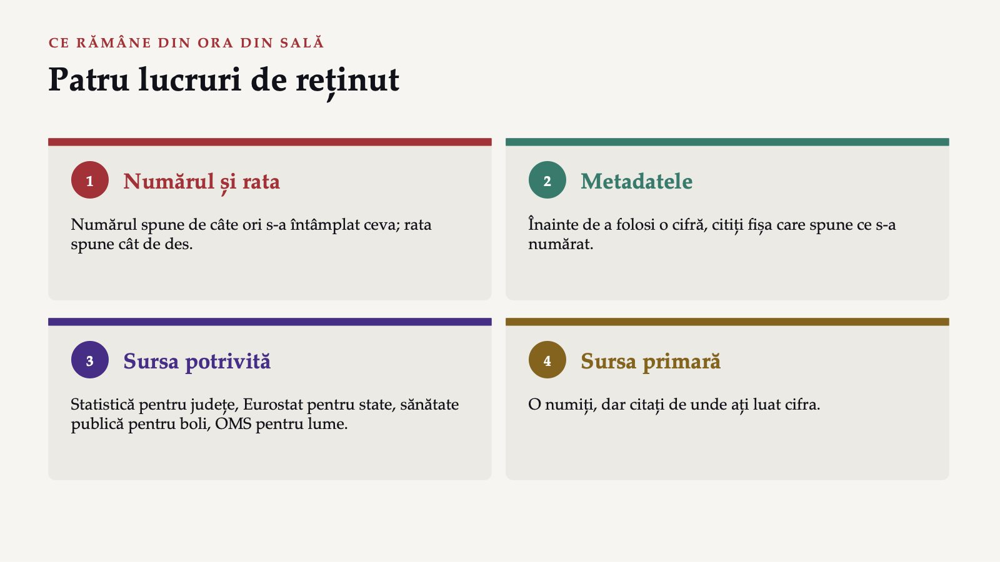
23 / 27Patru lucruri de reținut din ora din sală. Numărul spune de câte ori s-a întâmplat ceva, iar rata spune cât de des, pentru că raportează numărul la populație. Înainte de a folosi o cifră, citiți metadatele, adică fișa care spune ce s-a numărat. Fiecare sursă are rostul ei: Institutul Național de Statistică pentru regiuni și județe, Eurostat pentru comparații între statele Uniunii, Institutul Național de Sănătate Publică pentru supravegherea bolilor, Organizația Mondială a Sănătății pentru comparații cu țări din toată lumea. Iar sursa primară este instituția care a strâns datele: o numiți, dar citați de unde ați luat cifra.
Ce predați după al doilea seminar
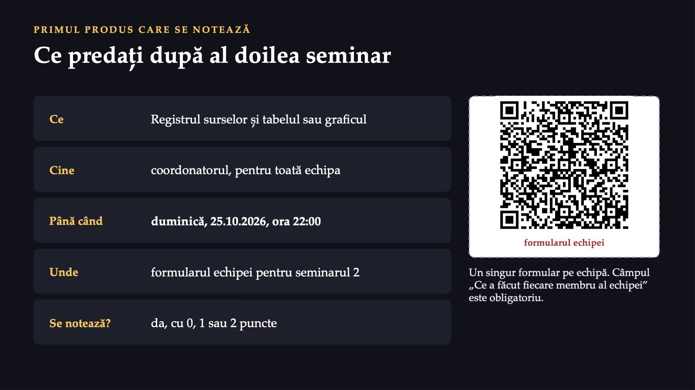
24 / 27Ce predați după al doilea seminar: registrul surselor și tabelul sau graficul. Le predă coordonatorul, pentru toată echipa, până duminică, 25.10.2026, ora 22:00, în formularul echipei pentru seminarul 2. Este primul produs care se notează, cu 0, 1 sau 2 puncte. Trimiteți un singur formular pe echipă. Câmpul obligatoriu „Ce a făcut fiecare membru al echipei” se completează cu rolurile reale.
Ce verifică titularul la acest produs
![CRITERIILE PRODUSULUI Ce verifică titularul la acest produs Registrul este complet cel puțin trei surse, două oficiale Fiecare cifră are cele patru etichete sursa, indicatorul, anul, nivelul teritorial Metadatele au fost citite o propoziție despre ce s-a numărat Unitatea este potrivită rata, la comparațiile între populații; la o serie singură, numărul cu unitatea scrisă este acceptat Tabelul sau graficul se citește singur titlu, unitate, linie de sursă, mențiuni Interpretarea este prudentă ce arată datele și ce nu arată Inteligența artificială este declarată numai pentru redactare, conform ghidului](diapozitive/LP02/025.jpg) 25 / 27
25 / 27Ce verifică titularul la acest produs. Registrul este complet: cel puțin trei surse, dintre care cel puțin două oficiale. Fiecare cifră are cele patru etichete. Pentru fiecare indicator, metadatele au fost citite, adică există o propoziție despre ce s-a numărat. Unitatea este potrivită comparației: rata, la orice comparație între populații; la seria unui singur teritoriu, numărul cu unitatea scrisă este acceptat. Tabelul sau graficul se citește singur, cu titlu, unitate de măsură, linie de sursă și mențiunile sursei. Interpretarea este prudentă. Instrumentele de inteligență artificială se folosesc numai pentru redactare, după regula din ghidul proiectului, și se declară; ele nu caută surse și nu dau cifre.
Ora echipei începe la 18:00
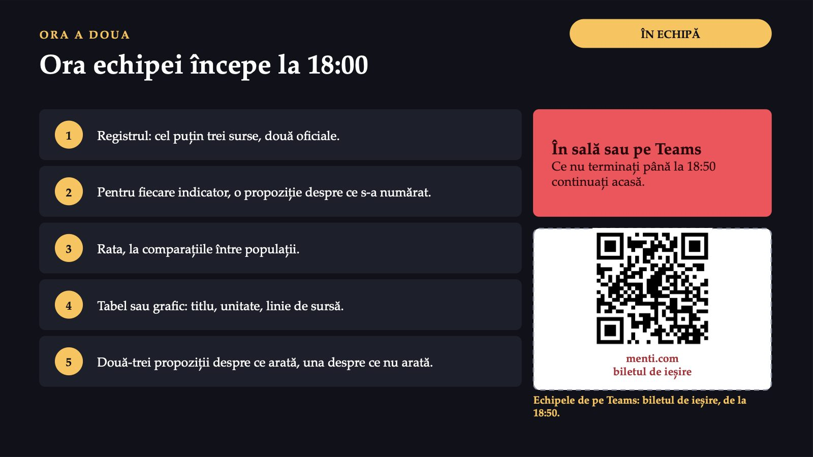
26 / 27În ora echipei construiți registrul surselor și un tabel sau un grafic. Ora echipei începe la 18:00, în sală; echipa poate lucra și într-o întâlnire pe Teams. Ce nu terminați până la 18:50 continuați acasă, până la termenul de duminică, 25.10.2026, ora 22:00. Echipele care lucrează pe Teams folosesc, pentru biletul de ieșire, codul Mentimeter anunțat în sală.
Trei întrebări pentru final
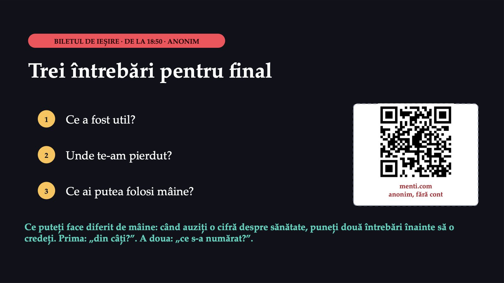
27 / 27Biletul de ieșire este anonim, pe Mentimeter, de la 18:50, prin codul QR de pe ecran. Trei întrebări deschise: ce a fost util, unde v-am pierdut, ce ați putea folosi mâine. Dacă biletul are răspunsuri, la începutul seminarului următor veți vedea două lucruri schimbate după ele, iar schimbările apar și pe pagina disciplinei, lunea viitoare. Ce puteți face diferit de mâine: când auziți o cifră despre sănătate, puneți două întrebări înainte să o credeți. Prima este „din câți?”. A doua este „ce s-a numărat?”.
Săgeți sau spațiu: navigare · O: vedere de ansamblu · N: notele prezentatorului · F: ecran complet · Esc: închidere